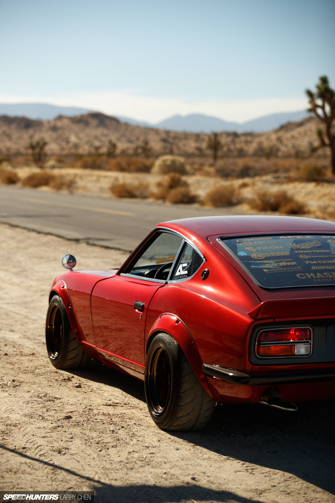
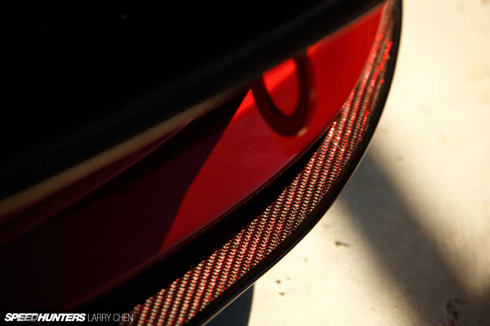

Home Grown: The Chasing Js 240Z
As someone who considers himself seriously lacking in the DIY and skilled crafts department, I have open admiration for those who are able to hand craft things themselves.
The determination to tackle something that you’ve never done before, simply by enrolling in the School of YouTube and absorbing enough information until you feel empowered and informed enough to just throw caution to the wind and give it a go, is a pretty cool quality if you ask me.

The 240Z in front of you has been in Dominic Le’s possession for just over a year now, but some of you may recognise it from its debut at the 2017 SEMA Show back in November. The aim was to reimagine a classic with some modern touches, but without any unnecessary bells and whistles; just a raw, clean car that would turn heads and could be driven hard.

Dominic ultimately wanted to push the limits of what he could build at home. That’s right – pretty much everything here has been done by Dominic and his friends over the course of six months. He’s entirely self-taught at this, too.

Some jobs, like the titanium welding and the paint were outsourced, but Dominic did as much as he could up to that point. Building the 240Z was as much a learning experience as it was a means to an end.

On the surface, the exterior appears a reasonably simple recipe. Building upon the Z’s classic shape, the addition of Datsun ZG flares bulks up its road presence, whilst giving the wide Work wheels much needed breathing space.

A custom pair of Chasing Js red reflection carbon fibre front and rear bumpers, and front splitter were added – the red is woven into the composite, giving it a near black appearance that reflects hues of crimson.